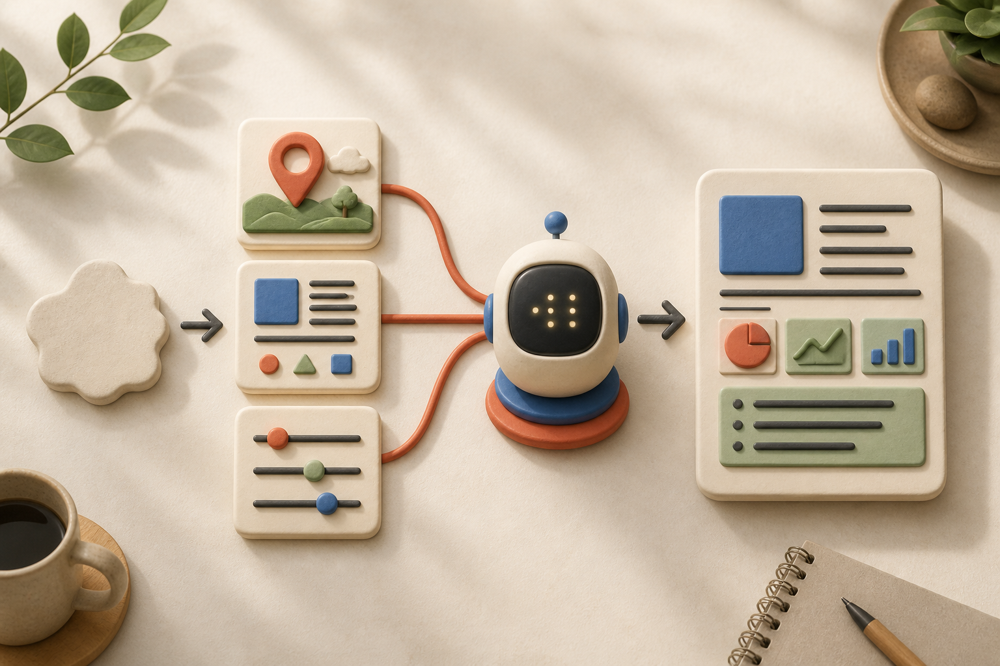
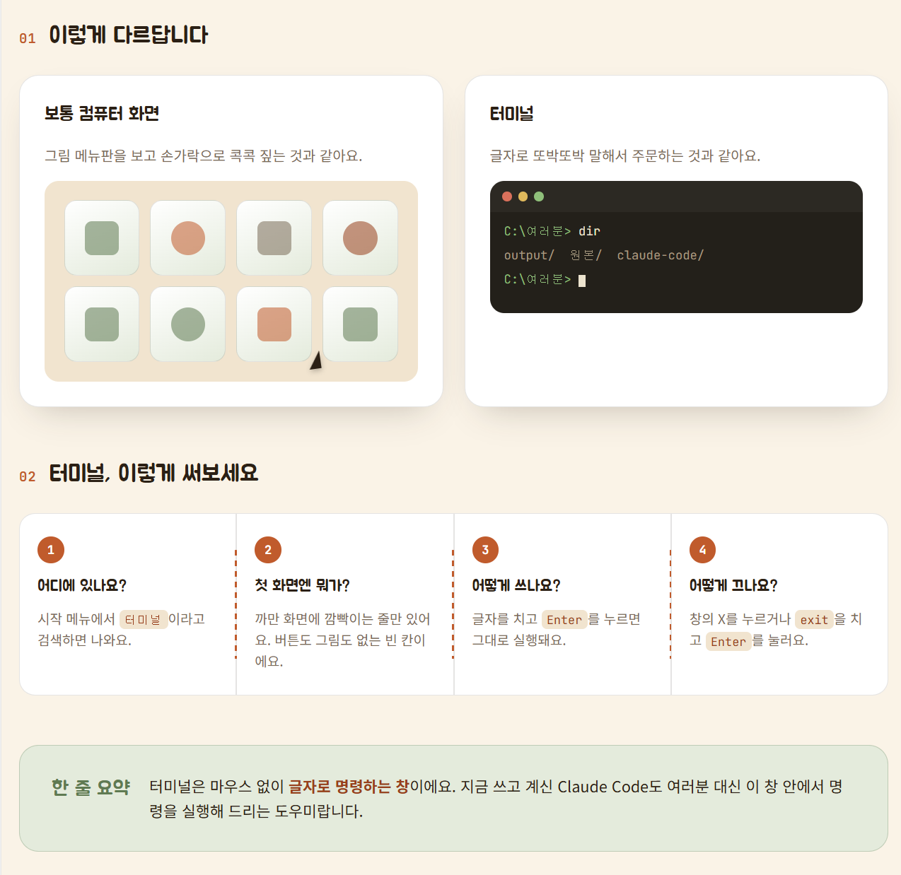
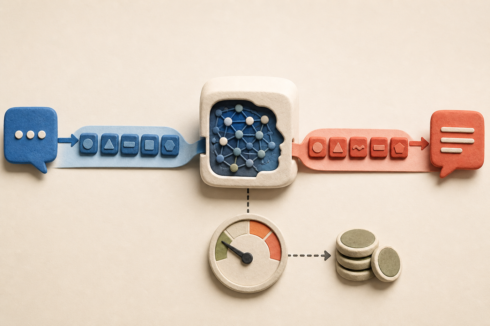

대부분의 AI 서비스에는 그냥 대화하는 Chat(챗) 모드와, AI가 직접 무언가를 대신 처리해주는 Work(워크·에이전트) 모드가 따로 있습니다. 이 둘을 구분하지 못하면 크레딧이 훨씬 빨리 줄어듭니다.
Chat — 질문하면 답이 바로 나오는 것. 글쓰기, 이미지 만들기, PPT 초안 같은 "결과물을 받는" 작업은 전부 여기서 끝납니다.
Work — 내가 직접 할 수 없는 일을 "대신 다녀오게" 시키는 것. 이메일을 자동으로 보내거나, 여러 웹사이트를 돌아다니며 정보를 모아오는 것처럼 "AI가 직접 행동해야 하는" 작업만 여기로 보냅니다.
쉬운 말로
Chat은 "나한테 설명해줘"이고, Work는 "네가 대신 다녀와"입니다. 대신 다녀오게 시키는 건 훨씬 품이 많이 드는 일이라, 크레딧도 그만큼 더 많이 씁니다. 그러니 굳이 심부름을 보낼 필요가 없는 일까지 Work로 보내지 않는 게 중요합니다.
📸 스크린샷이 말보다 강하다
긴 문장으로 상황을 설명하는 대신, 화면이나 사물을 사진으로 찍어 그대로 보여주면 AI가 훨씬 정확하게 이해합니다. 사람도 말로만 듣는 것보다 사진 한 장을 보는 게 더 빨리 이해되는 것과 같은 원리입니다.
PC에서 — Window + Shift + S로 원하는 영역을 캡처한 뒤 Ctrl + V로 붙여넣기
스마트폰에서 — 기기 기본 스크린샷 기능 사용
화면에 화살표나 동그라미를 그려서 "이 부분만 바꿔줘"라고 하면 훨씬 정확하게 알아듣습니다.
쉬운 말로
물건이 고장 났을 때 "이상하게 생긴 부품이 있어요"라고 백 마디 설명하는 것보다, 사진 한 장 찍어서 "이거 뭐예요?"라고 묻는 게 훨씬 빠르고 정확합니다. AI에게도 똑같습니다.
Part 2
프롬프트 — AI에게 제대로 말 거는 법
🗣 프롬프트란 무엇인가
프롬프트는 AI에게 주는 "지시문"입니다. 컴퓨터 명령어처럼 딱딱한 게 아니라, 사람에게 부탁하듯 설명하는 문장이라고 생각하면 됩니다.
이건 "새로 온 신입 직원에게 일을 시키는 것"과 똑같습니다. 대충 말하면 대충 나오고, 상황·목적·조건을 구체적으로 말해줄수록 결과가 좋아집니다.
❌"블로그 글 써줘" → 두루뭉술한 결과가 나옵니다.
✅"40대 주부 대상으로, 스마트폰 사진 강의를 홍보하는 블로그 글을 써줘. 친근한 말투로, 신청 링크는 마지막에 넣어줘" → 훨씬 쓸 수 있는 결과가 나옵니다.
두 문장의 차이는 누구에게 / 무엇을 / 어떤 조건으로가 들어갔는지입니다.
쉬운 말로
엄마한테 "편의점 가서 뭐 좀 사와"라고 하면 뭘 사 올지 모릅니다. "편의점 가서 참치마요 삼각김밥 1개랑 생수 500ml 하나, 저녁 6시까지 사와"라고 하면 정확히 그걸 사 옵니다. AI도 사람과 똑같이, 구체적으로 말해줄수록 원하는 걸 정확히 가져다줍니다.
🧱 좋은 프롬프트의 3가지 재료

세 가지 재료가 모이면 막연한 부탁이 바로 쓸 수 있는 결과물로 바뀝니다.
맥락(상황) — 지금 어떤 상황인지. 예: "시니어 대상 강의 홍보글인데"
원하는 결과물 — 뭘 만들어달라는 건지. 예: "블로그 포스팅 형태로"
조건·제약 — 톤, 분량, 하지 말아야 할 것. 예: "너무 전문용어 쓰지 말고, 500자 이내로"
쉬운 말로
요리 레시피와 같습니다. "언제·어떤 상황에서 먹을 요리인지(맥락)", "뭘 만들어야 하는지(결과물)", "맵지 않게·30분 안에(조건)"가 다 들어가야 원하는 요리가 나옵니다. 셋 중 하나만 빠져도 엉뚱한 결과물이 나올 수 있습니다.
한 단계 더 — 프롬프트 짜는 걸 AI에게 맡기기
프롬프트를 완벽하게 못 써도 괜찮습니다. 메타 프롬프트("OO을 만들고 싶은데, 이걸 위한 좋은 프롬프트를 만들어줘")와 역질문 프롬프트("시작하기 전에 나한테 필요한 걸 먼저 물어봐줘")를 같이 쓰면, AI가 알아서 필요한 걸 되물어보고 스스로 좋은 프롬프트를 짜줍니다. 초보자도 부담 없이 시작할 수 있는 방법입니다.
바로 써보는 프롬프트 틀
[맥락] 이 결과물을 누가, 어디에 사용할지 설명합니다.
[결과물] 무엇을 만들어야 하는지와 형식을 적습니다.
[조건] 분량, 말투, 꼭 넣을 것, 빼야 할 것을 적습니다.
시작하기 전에 부족한 정보가 있다면 핵심 질문부터 해줘.
🎭 프롬프트 6가지 유형
실전에서 자주 쓰는 방식은 크게 여섯 가지입니다. 뭐가 정답이라기보다 상황에 따라 섞어 쓰는 것이 핵심입니다 — 간단한 건 직접 지시형으로 끝내고, 중요하고 복잡한 건 역할 부여 + 단계별 + 역질문을 함께 씁니다.
유형
뭘 하는 건가
예시
직접 지시형
그냥 바로 시키기
"이 사진 설명글 써줘"
역할 부여형
AI한테 특정 전문가 역할을 입혀주기
"너는 20년차 사진 강사야. 초보자한테 구도 잡는 법을 설명해줘"
예시 제시형
원하는 스타일 예시를 먼저 보여주기
"이런 톤으로 써줘: (예문 붙여넣기)"
단계별 지시형
한 번에 다 시키지 말고 순서대로
"①먼저 목차를 짜고 ②내가 확인하면 ③본문을 써줘"
메타 프롬프트
프롬프트 자체를 짜달라고 시키기
"OO을 만들려는데, 이걸 위한 좋은 프롬프트를 만들어줘"
역질문 프롬프트
AI가 먼저 되묻게 시키기
"시작하기 전에 나한테 필요한 걸 먼저 물어봐줘"
쉬운 말로
친구한테 부탁하는 방법이 여러 가지인 것과 같습니다. 그냥 "이거 해줘"(직접 지시형)도 있고, "네가 만약 요리사라면?"처럼 역할을 씌워 물어볼 수도 있고(역할 부여형), "이런 그림처럼 그려줘"라고 보여줄 수도(예시 제시형) 있습니다. 상황에 맞는 방법을 고르면 됩니다.
✅ 더 좋은 프롬프트 체크리스트
구체적인가 — "예쁘게"보다 "따뜻한 색감으로, 여백을 넉넉하게"
맥락이 있는가 — 이게 왜 필요한지, 누가 볼 건지
형식을 지정했는가 — "표로", "3줄 요약으로", "목차부터"
기준·제약을 줬는가 — 분량, 톤, 하지 말아야 할 것
한 번에 너무 많이 안 시켰는가 — 복잡하면 나눠서 순서대로
❌"회식 공지 문자 좀 다듬어줘"
✅"이번 주 금요일 저녁 7시, 강남역 근처 삼겹살집에서 하는 팀 회식 공지 문자를 써줘. 대상은 팀원 15명이야. 편하고 친근한 말투로, 불참자는 답장 달라는 말도 넣어서 5줄 이내로 써줘"
📈 AI에게 맡기는 범위가 커지는 4단계
방금 배운 "프롬프트"는 사실 AI를 시키는 방법 중 가장 기초 단계입니다. 실제로는 아래처럼 점점 더 많은 것을 맡기는 방향으로 발전합니다. 신입 직원이 경력을 쌓아가며 점점 더 큰 일을 맡게 되는 것과 비슷합니다.
①
프롬프트 — 한 번 시키기
비유: 신입 직원한테 "이거 해줘"라고 한 번 부탁하기. 예: "이 이메일 5줄로 요약해줘"
↓
②
컨텍스트 — 자료를 먼저 주고 시키기
비유: 일 시키기 전에 참고자료를 책상에 펼쳐주기. 예: "작년 계획서를 보고, 같은 형식으로 올해 것도 써줘"
↓
③
하네스 — 일하는 순서 자체를 짜주기
비유: 매뉴얼을 만들어서 순서대로 일하게 하기. 예: "①자료 모으기 ②분석하기 ③검증하기 ④정리하기" 순서를 통째로 지시
↓
④
루프 — 스스로 점검하고 고치게 하기
비유: 일을 시킨 뒤 스스로 검토까지 하게 하기. 예: "결과가 나오면 네가 먼저 오류가 없는지 확인하고, 이상하면 다시 고쳐서 줘"
핵심
뭐가 더 좋다는 게 아니라, 간단한 일은 ①로 충분하고 중요하고 복잡한 일일수록 ②③④로 넘어가는 겁니다. ④는 아직 등장한 지 얼마 안 된 개념이라 "이런 방향으로 발전하고 있다" 정도로만 알아두면 됩니다.
Part 3
바이브 코딩 — 내 컴퓨터 안에서 일하는 AI
🛠 바이브 코딩이란 무엇인가
코드를 몰라도, AI에게 말로 시켜서 내가 쓸 프로그램이나 결과물을 직접 만드는 것을 "바이브 코딩"이라고 부릅니다. 예전에는 책장 하나를 만들려면 목수를 불러야 했다면, 이제는 AI에게 "이런 책장을 만들어줘"라고 말로 설명하면 AI가 대신 만들어주는 것과 비슷합니다.
여기서 목표는 완벽한 개발자가 되는 게 아니라, 내 일 하나를 덜어주는 도구를 만드는 것입니다.
바이브 코딩은 폴더 안의 자료를 읽고, 만들고, 확인하는 흐름을 AI와 함께 설계하는 일입니다.
쉬운 말로
웹에서 쓰는 일반 채팅(GPT, 클로드 대화창 등)은 내 컴퓨터 안의 파일을 볼 수 없습니다. 파일을 쓸 때마다 매번 직접 첨부해서 줘야 합니다. 반면 클로드 코드·코덱스 같은 "데스크톱 앱"은 내가 지정한 폴더를 통째로 열어두고 그 안의 파일을 스스로 찾아보며 일합니다. 마치 방 열쇠를 통째로 맡기는 것과, 사진 한 장씩만 보여주는 것의 차이입니다.
⌨️ 터미널 — 컴퓨터에게 글자로 정확히 부탁하는 창
터미널(Terminal)은 아이콘과 메뉴를 마우스로 누르는 대신, 글자로 명령을 입력해 컴퓨터를 움직이는 창입니다. 검은 화면 때문에 전문가만 쓰는 도구처럼 보이지만, 실제로는 컴퓨터에게 짧고 정확한 문장으로 부탁하는 입력창에 가깝습니다.
폴더를 여는 일도 마우스로 폴더를 두 번 누르면 되고, 터미널에서는 cd 폴더이름이라고 씁니다. 같은 일을 다른 방식으로 시키는 것뿐입니다. 클로드 코드·코덱스 같은 도구는 바로 이 터미널에서 여러분 대신 명령을 입력하고, 결과를 읽고, 오류가 나면 고쳐가며 일합니다.

마우스로 메뉴를 고르는 대신 글자로 명령합니다. 글자를 입력하고 Enter를 누르면 실행됩니다.
터미널 화면은 세 부분만 읽으면 됩니다
① 현재 위치C:\Users\내이름>처럼 지금 어느 폴더에 있는지 보여줍니다. 작업 전에 위치부터 확인하면 엉뚱한 폴더를 건드리는 실수를 줄일 수 있습니다.
② 내가 입력한 명령깜빡이는 네모(커서) 뒤에 글자를 쓰고 Enter를 누릅니다. 화면에 보이는 > 기호 자체는 입력하지 않습니다.
③ 컴퓨터의 답명령 아래에 파일 목록, 성공 메시지, 오류 이유가 나타납니다. 오류도 고장이 아니라 “이 명령을 이해하지 못한 이유”를 알려주는 답입니다.
WINDOWS TERMINAL · 안전한 읽기 연습
PS C:\Users\여러분>pwd
현재 폴더 위치를 확인합니다.
PS C:\Users\여러분>dir
현재 폴더 안의 파일과 폴더 목록을 봅니다.
PS C:\Users\여러분>cd "내 문서"
이름에 띄어쓰기가 있으면 큰따옴표로 감싸 이동합니다.
처음 알아둘 기본 명령 5개
명령
뜻
쉬운 비유
pwd
현재 폴더 위치 확인
지도에서 “내 위치” 누르기
dir
현재 폴더 내용 보기
서랍을 열어 안을 살펴보기
cd "폴더명"
다른 폴더로 이동
다른 방으로 들어가기
cls
화면의 글자 정리
칠판 지우기 — 파일은 지워지지 않음
exit
터미널 종료
방에서 나와 문 닫기
안전하게 쓰는 4가지 습관
📍실행 전 위치 확인: “지금 어느 폴더에서 작업 중이야?”라고 AI에게 먼저 확인시킵니다.
🧾모르는 명령은 설명부터: “아직 실행하지 말고, 이 명령이 무엇을 바꾸는지 한 줄씩 설명해줘”라고 요청합니다.
⚠️삭제·덮어쓰기 명령은 바로 실행하지 않기: 삭제 대상의 전체 경로와 복구 가능 여부를 먼저 확인합니다.
🔐비밀번호와 API 키는 붙여넣지 않기: 채팅이나 명령 기록에 남을 수 있으므로 환경변수·비밀 설정 기능을 이용합니다.
AI에게 이렇게 말하면 더 안전합니다
“터미널 초보자입니다. 먼저 현재 위치와 변경될 파일을 알려주고, 삭제나 덮어쓰기가 있으면 실행 전에 꼭 확인을 받아주세요. 각 명령은 왜 필요한지 쉬운 말로 한 줄씩 설명해주세요.”
🤖 클로드 코드 vs 코덱스 vs 안티그래비티
바이브 코딩을 할 수 있는 도구는 회사마다 다르게 만들어져 있습니다. 각각 만든 회사가 다른 "AI 로봇 비서"라고 생각하면 쉽습니다. 세 가지 모두 내 컴퓨터의 파일을 직접 읽고, 프로그램을 켜고 끄고, 오류가 나면 스스로 고쳐가며 작업한다는 공통점이 있습니다.
도구
만든 회사 · 기반 모델
필요 조건
특징
클로드 코드 (Claude Code)
Anthropic · 클로드(소넷·오퍼스 등)
클로드 유료 구독 또는 API 크레딧
터미널(명령창) 기반. 파일 읽기·쓰기, 명령 실행, 웹 자동화까지 한 번에 처리. "이 작업은 물어보고, 이건 바로 해도 돼"처럼 권한 단계를 세밀하게 조절할 수 있어 안전장치가 강함. 일을 여러 하위 작업자(서브에이전트)에게 나눠 맡길 수 있고, 구글 드라이브·이메일 같은 외부 도구도 연결(MCP) 가능. 이 학습자료 자체도 클로드 코드로 만들어졌습니다.
코덱스 (Codex)
OpenAI · GPT 계열
ChatGPT Plus 이상 구독
터미널과 코드 편집기(IDE) 양쪽에 통합되어 사용 가능. 내 컴퓨터를 꺼둔 상태에서도 클라우드 서버에서 대신 작업을 돌려두고 나중에 결과만 받아보는 방식도 지원. ChatGPT 생태계와 자연스럽게 연결됨.
안티그래비티 (Antigravity)
Google · 제미나이(Gemini)
구글 계정 (무료 티어 있음)
세 도구 중 진입 장벽이 가장 낮음 — 무료로도 상당 부분 사용 가능해 처음 시작하기 좋음. 코드 편집기 형태의 통합 개발 환경(IDE)에 가까운 구성.
뭘 골라야 하나
이미 쓰고 있는 구독이 있다면 그 회사 도구부터 써보는 게 가장 빠릅니다. 클로드를 쓰고 있다면 좌측 상단 "코드" 메뉴에서 PC 앱을 검색해 설치하면 됩니다. 처음 접해본다면 무료 티어가 있는 안티그래비티로 감을 잡아보는 것도 좋은 방법입니다.
Part 4
크레딧·토큰 완전정복
🧩 토큰(Token)이란 무엇인가
AI는 우리처럼 "글자"를 통째로 읽지 않습니다. 문장을 아주 작은 조각으로 잘게 쪼갠 뒤, 그 조각들을 하나씩 읽고 다시 조립해서 대답합니다. 이 작은 글 조각 하나하나를 "토큰"이라고 부릅니다.

입력과 출력은 모두 토큰을 사용하고, 사용한 양과 모델에 따라 크레딧이 줄어듭니다.
예를 들어 "안녕하세요, 반갑습니다"라는 문장은 대략 이렇게 조각날 수 있습니다 (실제 조각나는 방식은 AI마다 조금씩 다릅니다):
안녕하세요,반갑습니다
중요한 건, 한 글자 = 한 토큰이 아니라는 점입니다. 한국어는 대체로 글자 2~3개가 모여야 토큰 1개가 되고, 영어는 짧은 단어 하나가 토큰 1개, 긴 단어는 여러 토큰으로 쪼개집니다. 그래서 같은 내용이라도 한국어로 쓰면 영어보다 토큰 수가 더 많이 나오는 경우가 흔합니다.
쉬운 말로
토큰은 레고 블록이라고 생각하면 됩니다. 우리가 문장이라는 큰 성을 만들 때, AI는 그걸 작은 블록 단위로 쪼개서 이해하고, 대답할 때도 블록을 하나씩 쌓아 올리듯 만들어냅니다. 그리고 요금은 이 블록을 몇 개나 썼는지로 매겨집니다.
💳 크레딧(Credit)이란 무엇인가
크레딧은 토큰을 쓸 때마다 깎이는 이용권 포인트입니다. 충전식 교통카드를 떠올리면 쉽습니다 — 버스를 탈 때마다(=토큰을 쓸 때마다) 잔액이 조금씩 줄어드는 것처럼, AI에게 글을 보내고 답을 받을 때마다 크레딧이 줄어듭니다.
내가 보낸 글(입력, input)과 AI가 답한 글(출력, output)은 따로 계산됩니다. 보통 AI가 답하는 쪽(출력)이 몇 배 더 비쌉니다 — 듣는 것보다 직접 만들어서 말하는 게 더 품이 드는 것과 같은 이치입니다.
모델(하이쿠·소넷·오퍼스·페이블 등)마다 토큰 1개당 가격이 다릅니다. 더 똑똑하고 복잡한 모델일수록 토큰 하나 쓰는 값이 비쌉니다.
쉬운 말로
아르바이트생(가벼운 모델)에게 심부름을 시키면 시급이 싸고, 경력 많은 전문가(고급 모델)에게 맡기면 시급이 비쌉니다. 둘 다 "일한 시간(=토큰 수)"만큼 요금이 나가는 건 똑같지만, 누구에게 시켰는지에 따라 시급 자체가 다른 것입니다. 그래서 간단한 요약·정리는 저렴한 모델로, 복잡하고 중요한 판단이 필요한 일은 비싼 모델로 나눠 쓰는 게 크레딧을 아끼는 핵심입니다.
💰 1,000토큰(1K)은 실제로 얼마일까
감을 잡기 위해, 한국어 기준 1,000토큰은 대략 A4 반 페이지 분량의 글 정도라고 생각하면 됩니다. 카카오톡 메시지로 치면 꽤 긴 대화 한 번 분량입니다.
아래는 모델 등급별로 "1,000토큰(1K)을 쓰면 대략 얼마가 드는지"를 보여주는 예시 표입니다.
모델 등급
내가 보낸 글 1K (입력)
AI가 답한 글 1K (출력)
가벼운 모델 (하이쿠 급)
약 $0.001 (약 1~2원)
약 $0.004~0.005 (약 6~7원)
기본 모델 (소넷 급)
약 $0.003 (약 4원)
약 $0.015 (약 21원)
고급 모델 (오퍼스·페이블 급)
약 $0.005~0.015 (약 7~21원)
약 $0.025~0.075 (약 35~105원)
⚠️ 위 숫자는 감을 잡기 위한 대략적인 예시이며, 환율(1달러≈1,400원 가정)과 모델 버전, 서비스 정책에 따라 실제 값은 달라집니다. 정확한 최신 요금은 사용 중인 서비스의 공식 요금 페이지에서 꼭 확인하세요.
실제로 계산해보면 — 기본 모델(소넷 급)로 카톡 한 번 주고받듯 대화한다면
짧은 질문 하나 (약 500토큰 입력)약 2원
AI의 답변 (약 500토큰 출력)약 11원
대화 한 번 합계약 13원
그럼 왜 크레딧이 빨리 줄어드는 것처럼 느껴질까
대화가 길어질수록 AI는 이전에 나눈 대화 전체를 매번 처음부터 다시 읽고 나서 대답합니다. 마치 회의할 때마다 지금까지 나온 이야기를 처음부터 다시 브리핑받는 것과 같습니다. 그래서 대화가 50턴, 100턴으로 길어지면 한 번 주고받을 때마다 다시 읽어야 하는 분량 자체가 계속 늘어나, 누적 비용이 눈덩이처럼 불어납니다. 목적이 바뀌면 새 채팅을 여는 것이 크레딧을 아끼는 가장 확실한 방법인 이유가 여기에 있습니다.
✅ 크레딧 아끼는 습관 6가지
자동 충전(Auto Reload) 끄기 + 한도 0으로 설정 — 실수로 충전돼도 환불이 안 됩니다.
Chat으로 끝나는 일은 Work로 보내지 않기 — 같은 결과에 크레딧만 더 씁니다.
목적이 바뀌면 새 채팅 열기 — 대화가 길어질수록 다시 읽어야 할 분량이 계속 늘어납니다.
간단한 작업은 가벼운 모델로 — 문서 정리·요약처럼 쉬운 일에 굳이 비싼 모델을 쓸 필요는 없습니다.
말 대신 스크린샷 — 상황을 길게 설명하는 것보다 화면을 보여주는 게 정보량 대비 토큰을 아낄 때가 많습니다.
시간 걸리는 작업은 기다리지 않고 동시에 여러 개 돌리기 — 크레딧을 아끼는 팁은 아니지만, 같은 크레딧으로 얻는 시간 효율을 극대화하는 방법입니다.
✅ 오늘 자료 한 줄 정리
프롬프트는 AI에게 주는 지시문 — 맥락·결과물·조건 3가지가 들어갈수록 결과가 좋아집니다.
프롬프트에는 6가지 유형이 있고, 정답은 없이 상황에 맞게 섞어 쓰는 것이 핵심입니다.
토큰은 AI가 글을 읽고 쓰는 최소 단위, 크레딧은 그 토큰을 쓸 때마다 깎이는 이용권입니다.
같은 토큰이라도 입력보다 출력이 훨씬 비싸고, 모델이 똑똑할수록 토큰 단가도 올라갑니다.
1,000토큰(1K)의 실제 비용은 모델에 따라 1원 대에서 100원 대까지 차이가 큽니다 — 정확한 값은 공식 요금 페이지 확인이 원칙입니다.
클로드 코드·코덱스·안티그래비티는 각각 다른 회사의 "내 컴퓨터에서 대신 일하는 AI 로봇 비서"이며, 결국 크레딧을 아끼는 큰 원칙은 "쉬운 일은 가볍게, 새 주제는 새 채팅으로"입니다.
후기 감사합니다 🙏
더 깊게 배우고 싶다면
이 자료로 감이 잡히셨다면, 실제로 내 컴퓨터에 프로그램을 설치하고 랜딩페이지 하나를 직접 완성해보는 1:1 세션도 준비되어 있습니다. 편하실 때 문의해주세요.